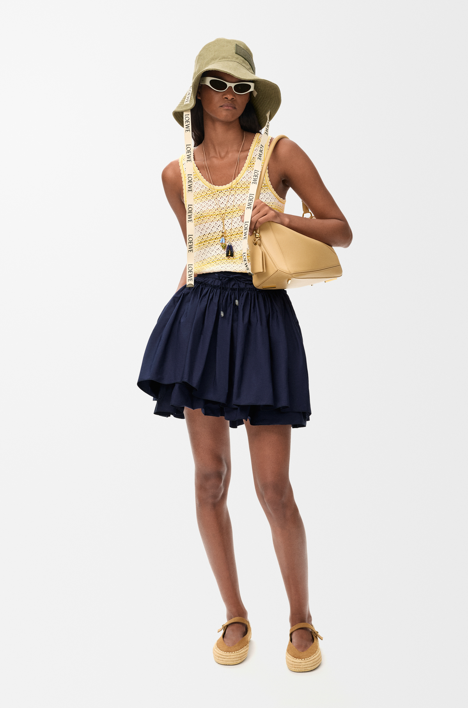
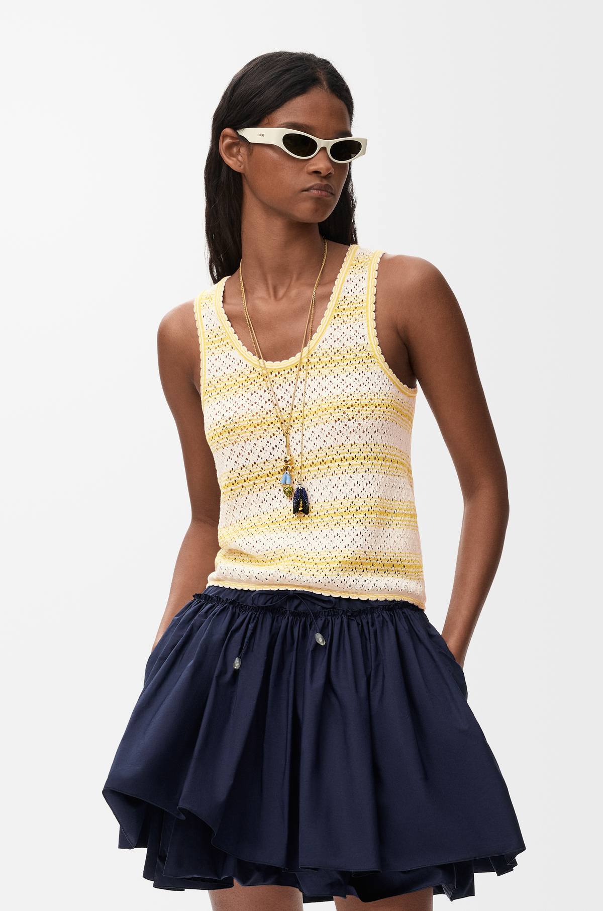

A working mockup of every drop-in module, built on the real V+V design tokens. Each block is labeled for translation into the Webflow / MAST build. Media, type, and color reflect production intent — Vimeo replaces the native video shown here.
Foundation: Neue Haas Display · Victor Serif · 4px spacing scaleAccent: Purple #3012E4Breakpoints: 991 / 767
00Layout systemEvery module snaps to one of these. One --margin = outer inset = column gap. Try ?m=24 / ?m=40 / ?m=64 in the URL.
Why the hardest decisions in a Shopify migration have nothing to do with the platform — and everything to do with what you choose to carry forward.
N
By Nick Park
Founder, Verbal + Visual
MigrationStrategyShopify
02Case Study HeaderClient / year / scope meta and hero media.
Case Study
An accelerated Shopify replatform
A four-month timeline, a rapid theme-design solution, and a launch that captured the brand's minimalist style without losing momentum.
ClientQuip
Year2024
IndustryOral Care · DTC
ScopeReplatform · Theme · CRO

03Prose / Info ParagraphThe article body workhorse — headings, paragraphs, lists, links.
Every replatform starts with the same fantasy: a clean slate. In practice, the platform is rarely the constraint. The constraint is the accumulated logic of the old store — the redirects, the metafields, the merchandising rules that nobody fully remembers but everybody depends on.
What you carry forward is the real decision
The temptation is to rebuild everything. The discipline is to decide, deliberately, what earns its place in the new system. A migration is a forcing function for editing — and the teams that treat it that way ship faster and cleaner.
A useful heuristic
If a feature can't be explained in one sentence to the person who'll maintain it, it probably shouldn't survive the migration. Complexity that can't be owned is complexity that rots.
04Pull QuoteEditorial emphasis — Victor Serif italic, accent rule.
A migration is a forcing function for editing. The teams that treat it that way ship faster and cleaner.
— Nick Park, Verbal + Visual
05Numbered SequenceLight-grey cards for listed / series info — engagement phases, deliverables, methodology. Accent numeral in the gutter, titled list of items.
Engagement
01
Brand + Digital Assessment
Stakeholder Interview Analysis
Synthesize leadership and cross-functional perspectives into a clear set of shared priorities, risks, and decision drivers.
Digital Experience Audit
Evaluation of visual identity, messaging, and customer touch points to identify experience risks and opportunities that impact conversion, clarity, and brand expression.
Industry Benchmarking Analysis
Compare the current experience against relevant industry and category standards to identify competitive gaps, strengths, and priority opportunities.
02
Strategy Blueprint
Experience Principles Framework
Define a clear set of digital experience principles that power customer-centric brand strategy decisions and govern ongoing site initiatives across teams.
Digital Strategy Execution Guide
Translate brand pillars into digital concepts, priorities, and execution guidance that drive engagement, conversion, and consistent brand expression.
06Media — Single (image)Rounded frame, 16:9, contained width. Caption is a separate drop-in below.

PDP redesign. The new product template, built to merchandise without a developer in the loop.
07Video — three modesOne component. Loop (silent, autoplay) · Sound (autoplay muted, unmute) · Hover (plays on hover). Corner play/pause always. No fullscreen — size is a layout choice.
Loop — silent ambient texture.
Sound — autoplays muted; unmute for a walkthrough.
Hover to play
Hover — lazy-loads + plays on hover.
08Media — Pair (two-up)Portrait ratio by default — reads cohesively beside a full-width landscape. Either side can be video.
10Media + Text — layout optionsSame module, three placements. Tell me which to keep — we drop the rest so it's not even an option.
A · Half + Half (card height matches the media)
Design Detail
A pill system, built into the type
Inspired by the form of the hero product, the pill becomes a defining feature within the typography's stylistic set — strengthening the connection between product and brand.
B · 2/3 media + 1/3 text
Color as a Signal
Color guides the journey
The expanded palette is a visual tool for guiding customers across the brand experience.
C · 1/3 media + 2/3 text
Packaging
A studio system for product photography
Every shot framed to a consistent system, so the catalogue reads as one coherent body of work rather than a pile of one-offs. The narrow media keeps the focus on the writing.
12Scope Columns + Visit LinkCredits / scope lists and the external "visit site" link.
17Expanding Feature PillsOsmo island re-skinned into the content-bubble family. Click a pill → it expands + the synced visual (image or video) crossfades.
Headless architecture.
A decoupled front end so the team ships UI changes without waiting on the platform.
Subscription engine.
Recurring orders, dunning, and a self-serve portal built for retention from day one.
Merchandising tools.
Drag-and-drop collection rules so marketing updates the storefront without a developer.
Analytics layer.
Server-side events and clean attribution so optimization decisions rest on real data.
18Horizontal Scrolling SectionsOsmo island. Section pins and panels scroll sideways as you scroll down. Re-skinned process sequence.
Step 01
Discover
Step 02
Design
Step 03
Build
Step 04
Launch
19Highlight Text on ScrollOsmo island. Text fades from faint to solid character-by-character as it scrolls through. SplitText.
The best migration is the one your customers never notice — until everything is suddenly faster.
21Audio Player ("Hear")Slim single-row bar — play · title · inline progress. Takes minimal room and drops into context (under a paragraph, beside a quote). Purple play, real audio.
In conversation
V+V × quip · Founder interview
0:00
0:00
22Drawer — "Read more / See more"In context: a "Read more →" under a paragraph. The drawer holds the overflow (deeper read, full credits). Grid-aligned ≈ the 1/3 column.
When a claim needs more room than the page should give it, the drawer holds the overflow — a deeper read, a fuller credit list, the long version of a short statement. It keeps the main column calm while the detail stays one tap away.
27Download Button (in context)Shown inside a Media + Text block — e.g. the case-study PDF lives in the card. Animates idle → downloading → success.
Case Study
An accelerated Shopify replatform
The full write-up — process, metrics, and credits — as a PDF.
28Tooltip → info popup on an image gridOsmo island (pure CSS). Inline term tooltip, AND applied to a gridded image set — hover a shot to reveal an info card (your "globe" idea).
The migration touched every layer of the
stackFull stackStorefront theme, checkout, subscription logic, and the analytics layer underneath. — not just the front end.
Product pageThe redesigned PDP — merchandised without a developer in the loop.
Detail systemReusable detail modules that scale across the catalog.
PackagingStudio product photography, shot to a consistent system.
15Top Section — Case Study OverviewOne adaptable hero, four use cases (15–18). Split: title + meta + actions left, intro + metrics right. Same slots re-arrange for the others.
A four-month timeline, a rapid theme-design solution, and a launch that captured the brand's minimalist style without losing momentum.
+31%Conversion rate
−51%Load time (LCP)
+18%Sessions
16Top Section — Thought LeadershipStacked editorial column — the refined article opener. Sans-light display with one serif-italic word, byline, topic pills.
Thought Leadership
The replatform is the easy part
Why the hardest decisions in a Shopify migration have nothing to do with the platform — and everything to do with what you choose to carry forward.
N
By Nick Park
Founder, Verbal + Visual
MigrationStrategyShopify
17Top Section — Micro Case StudyCompact inverted band — color blocking + a metric rail. Lower height, for a one-screen story or an index row.
Micro Case
Subscription, rebuilt for retention
A self-serve portal and smarter dunning lifted active subscriptions without touching acquisition spend.
SubscriptionsRetention
+18%Active subscribers
−24%Involuntary churn
18Top Section — Custom ToolTool launcher — icon chip, primary action, and a color-blocked panel teasing the output. For interactive / calculator pages.
Interactive Tool
Replatform readiness scorecard
Answer eight questions about your current stack and get a tailored migration risk profile in under two minutes.